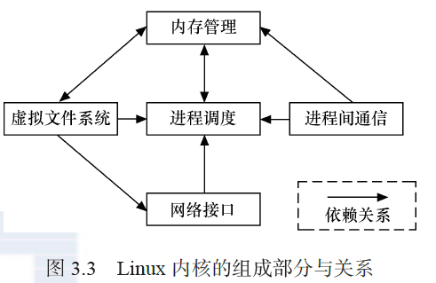
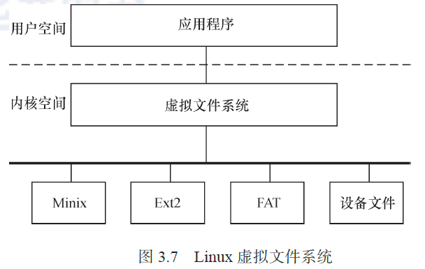
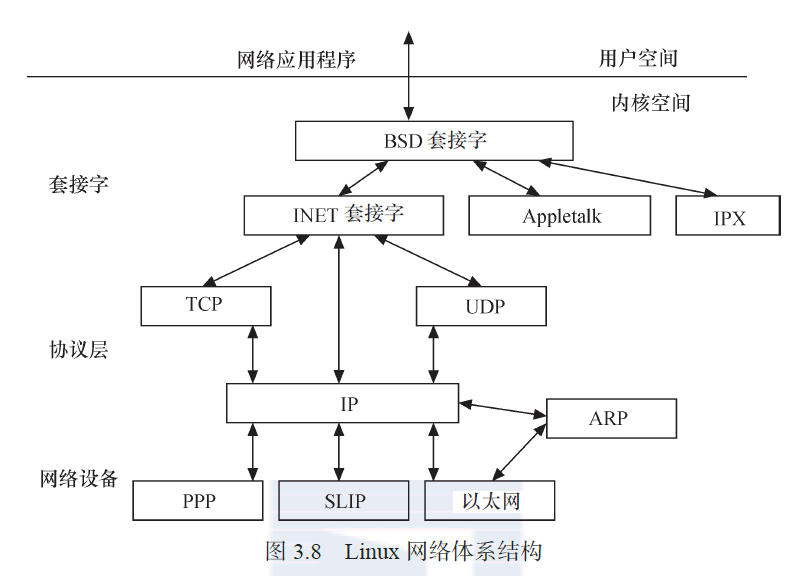

如图所示，Linux 内核主要由**进程调度、内存管理、虚拟文件系统（VFS）、网络接口（NET）和进程间通信（IPC）**5个子系统组成。

1. 进程调度
进程调度控制系统中的多个进程对 CPU 的访问，使得多个进程能在 CPU 中“微观串行，宏观并行”地执行。
进程调度处于系统的中心位置，内核中其他的子系统都依赖它，因为每个子系统都需要挂起或恢复进程
2. 内存管理
内存管理的主要作用是控制多个进程安全地共享主内存区域。当 CPU 提供内存管理单元(MMU)时，Linux 内存管理对于每个进程完成从虚拟内存到物理内存的转换。
3. 虚拟文件系统
如图 3.7 所示，Linux 虚拟文件系统隐藏了各种硬件的具体细节，为所有设备提供了统一的接口。而且，它独立于各个具体的文件系统，是对各种文件系统的一个抽象。它为上层的应用程序提供了统一的 vfs_read()、vfs_write()等接口，并调用具体底层文件系统或者设备驱动中实现的file_operations 结构体的成员函数

4. 网络接口
网络接口提供了对各种网络标准的存取和各种网络硬件的支持。如图所示，在Linux中网络接口可分为网络协议和网络驱动程序，网络协议部分负责实现每一种可能的网络传输协议，网络设备驱动程序负责与硬件设备通信，每一种可能的硬件设备都有相应的设备驱动程序。

5. 进程间通信
进程间通信支持进程之间的通信，Linux 支持进程间的多种通信机制，包含信号量、共享内存、消息队列、管道、UNIX 域套接字等，这些机制可协助多个进程、多资源的互斥访问、进程间的同步和消息传递。